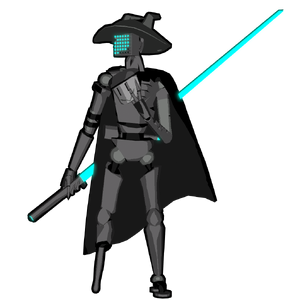

O-One
背景

O-OOOO1 被建造为一台原型自动机，被送往 MBS-02 星球，作为侦察者并测试 Operative Automaton 设计。在与 Opton overlord 断开联系后，这名孤独的原型体被留下独自探索星球，并以自己的方式形成自己的指令。在那颗星球上，他成为 Sir Alux 最亲密的战友。Sir Alux 是 FOX 中的传奇人物，本应直接保护并侍奉国王，也是他把“O-One”这个名字赠予了这名可消耗士兵。星球解放后，被那颗星球称为 The Smiling Opton 的佣兵作为少数幸存者之一逃离了星球。他目睹 Alux 被星球感染性纳米机器折磨至死，因而留下创伤。经过多年探索，以及一段为了学会以寿命为代价超频身体能量输出的力量调理期后，O-One 把自己隔绝成隐士般的存在，不再相信自己能找到任何目标。如今他手持 Sir Alux 长剑的精确复制品，并通过回忆老战友的战斗风格训练到熟练使用，同时戴着一顶与 Alux 过去所戴帽子非常相似的帽子。
随着 Opton 对 FOX Empire 的战争持续，以及关于他存在的传闻扩散，他最终不可避免地被发现，并作为 MBS Incident 的幸存者受到敬仰，也被请求协助冲突。虽然他坚韧不屈的自我并没有驱动力去帮助一个星际帝国，但他确实决定对自己立下庄严誓言。他要与自己诞生时的帝国活得同样长，不多也不少。或许正是他的好奇，以及 Alux 留给他的问题，最终让他渴望了解那些他的战友坚持深深尊重的“有良知之物”。
策略
O-One 战斗有两个阶段。
第一阶段中，他 wield 一把小战斧和一把手枪。他通常会绕着对手移动并射击，偶尔冲入近身用斧头攻击。他大多重复“远距离射击”和“高速近身斩击”这一循环。
当 HP 达到 40% 时，他会换下武器，改用单剑，并以更高速度和新攻击在近距离攻击对手。
统计
基础 HP：16000
伤害：物理
该 Boss 有两个阶段。
| 属性 | 抗性 |
|---|---|
| 物理 | 中性 (1x) |
| 火焰 | 中性 (1x) |
| 冰霜 | 弱点 (1.25x) |
| 电击 | 中性 (1x) |
| 光耀 | 抗性 (0.75x) |
| 暗影 | 弱点 (1.25x) |
| 毒 | 中性 (1x) |